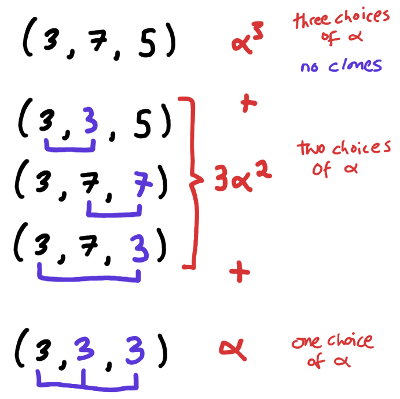

Types of DAG-like structures
I caught a link to
the Leo editor
from HN, which is an emacs-inspired but outline-centric text editor
that had one feature I hadn't seen in outliners
before that I thought was pretty interesting: you can create clones of
outline nodes and have them in multiple places in the tree
structure. If you edit one, you edit all of them.
So, basically the same thing as hard links in a file system --- except
you also can, in leo, make hard links of "directories", i.e. of
non-leaf nodes. It does prevent you from creating cycles, however,
i.e. prevents you from putting a clone of node N somewhere in the
descendants of that same node N.
A succinct way of saying this is that documents in
this system are just DAGs. The leafs are blobs of text and the
internal nodes have textual titles as well. Clones are just repeated
references to the same node.
One example of why this is interesting/useful is that searching for
all occurrences of a string in a document --- something that in emacs
for me is typically an interactive process --- can be thought of
instead as a pure function which yields a bit of data: namely, a new
outline node whose children are clones of the nodes in which your
search succeeded. The fact that this is reified into the document
means you can do cool things like map other UI-editing functions to
every occurrence, or, like, manually trim down the matches, (since
the match-set is just ordinary outliney data which the editor is
designed exactly to support convenient editing of) and then map some
operation over the remainder.
Anyway, it just got me trying to figure out
(Question 1) How would you talk about such data-with-cloned-references
with types?
I tried
to attack this question by supposing the answer had roughly the same shape as the
well-known answer to
(Non-question 0) How do you talk about a single cursor/hole in some data?
i.e.
(Answer 0) If your data has a type given by the type operator $\Lambda\alpha.F(\alpha)$
over one type variable, then its derivative $D(\Lambda\alpha.F(\alpha))$ is the type of
$F$-like data with an $\alpha$-shaped hole.
That is, I was hoping for something of the form
(Answer-schema 1) If your data has a type given by the type operator $\Lambda\alpha.F(\alpha)$
over one type variable, then [Some operation applied to $F$??? Call it $C(\Lambda\alpha.F(\alpha))$?]
is the type of $F$-like data, except that some of the $\alpha$s can be clones of one another.
I tried then working out what I thought this answer should be for monomials
over $\alpha$.
For example, if $F(\alpha) = \alpha^2$, then probably you should have $C(F)(\alpha) = \alpha^2 + \alpha$, since
you can either have a pair of values $\alpha$, or a pair consisting of two clones of a single value.
If $F(\alpha) = \alpha^3$, then $C(F)(\alpha) = \alpha^3 + 3\alpha^2 + \alpha$, because of the following diagram:

and if you do out the combinatorics for 4, you get $C(\Lambda \alpha.\alpha^4)(\alpha) = \alpha^4 + 7\alpha^3 + 6\alpha^2 + \alpha$.
Plugging 1,1,3,1,1,7,6,1 into good ol' OEIS gives
A008277 "Triangle of Stirling numbers of the second kind".
Of course! We are indeed counting the number of ways of partitioning the n different $\alpha$s in $\alpha^n$
into $k$ nonempty subsets, which indicate which things are in the same clone-equivalence-group.
So for monomials (and by linearity we determine what has to happen on polynomials) we can say
\[ C(\Lambda\alpha.\alpha^n) (\alpha) = \sum_k \left\{ {n \atop k} \right\} \alpha^k\]
But Does This Approach Describe DAGs?
It's not immediately clear that it does. If we think of the type of binary trees with $\alpha$s at their leaves
\[F\alpha = \mu \beta . \alpha + \beta * \beta\]
as its unwinding
\[F\alpha = \alpha + F\alpha * F\alpha\]
\[ = \alpha + (\alpha + F\alpha * F\alpha) * (\alpha + F\alpha * F\alpha)\]
\[ = \alpha + \alpha^2 + 2 \alpha (F\alpha)^2 + (F\alpha)^4\]
\[ = \alpha + \alpha^2 + 2 \alpha^3 + 5 \alpha^4 + 14 \alpha^5 + \cdots \]
then trying to compute $C(\Lambda \alpha . F \alpha)$ doesn't even have convergent coefficients as a power series.
We have to make something else a variable for this to make sense.
Let's try attaching data at internal nodes, and consider
\[F(\alpha, \gamma) = \mu \beta . \alpha + \beta * \beta * \gamma\]
\[ = \alpha + \alpha^2\gamma + 2 \alpha^3\gamma^2 + 5 \alpha^4\gamma^3 + 14 \alpha^5\gamma^4 + \cdots \]
so now
\[C(\Lambda \alpha . F(\alpha, \gamma))(\alpha) = \]
\[ = \alpha + (\alpha^2 + \alpha)\gamma + 2 (\alpha^3 + 3 \alpha^2 + \alpha) \gamma^2 + 5 (\alpha^4 + 7 \alpha^3 + 6\alpha^2 + \alpha ) \gamma^3 + \cdots\]
And if we set $\alpha = 1$ we get
\[ 1 + 2 \gamma + 10 \gamma^2 + 75 \gamma^3 + \cdots \]
which is A289679 "a(n) = Catalan(n-1)*Bell(n).". Which is telling us that the only thing this sequence is enumerating
is the DAGs which are only allowed to share leaves, but not internal nodes. Mysteriously, the one citation on OEIS is to a paper about enumerating
lambda terms, which I wouldn't have expected, since I don't yet see how the sharing that's going on here can be related to binding structure.
And googling for "A289679 zeilberger" doesn't give me anything, so maybe Noam hasn't come across this one yet? I'll have to ask him.
Counting binary DAGs
I wrote a little ocaml to count binary DAGs that are (or aren't) allowed to do sharing on internal nodes, and
counted them grouped by internal nodes, and by total nodes:
type tree =
| Leaf
| Ref of int
| Node of tree * tree;;
let rec range n = match n with
| 0 -> []
| _ -> 0 :: List.map (fun x -> x + 1) (range (n-1));;
(* list monad bind *)
let ( >@ ) (xs : 'a list) (f : 'a -> 'b list) : 'b list = List.concat (List.map f xs);;
type internalRefs =
| AllowInternalRefs
| ForbidInternalRefs
let int_of_internal_refs = (function AllowInternalRefs -> 1 | ForbidInternalRefs -> 0)
type countLeafs =
| CountLeafs
| NoCountLeafs
let int_of_count_leafs = (function CountLeafs -> 1 | NoCountLeafs -> 0)
let enumerate (n : int) (internal_refs : internalRefs) (count_leafs : countLeafs) =
let rec num_nodes (t : tree) : int = match t with
| Leaf -> 1
| Ref _ -> 0
| Node(t1, t2) -> num_nodes t1 + num_nodes t2 + int_of_internal_refs internal_refs
in
let rec aux (n : int) (refs : int) : tree list =
(if int_of_count_leafs count_leafs = n then [Leaf] else [])
@ (match n with
| 0 -> (range refs >@ (fun m -> [Ref m]))
| _ ->
range n >@
(fun m ->
aux m refs >@
(fun x -> aux (n - m - 1) (refs + num_nodes x) >@
(fun y -> [Node(x, y)]))))
in
aux n 0;;
let rec string_of_tree t =
(match t with
| Leaf -> "*"
| Ref n -> string_of_int n
| Node(t1, t2) ->
"n(" ^ (string_of_tree t1) ^ "," ^ (string_of_tree t2) ^ ")");;
let _ = List.iter (fun x -> print_string (string_of_tree x ^ "\n")) (enumerate 3 ForbidInternalRefs CountLeafs);;
let _ = print_string "\n";;
let _ = List.iter (fun x -> print_string (string_of_tree x ^ "\n")) (enumerate 4 ForbidInternalRefs CountLeafs);;
(* ??? *)
let _ = List.iter (fun n -> print_string ((string_of_int (List.length (enumerate n AllowInternalRefs NoCountLeafs))) ^ "\n")) (range 6);;
(* https://oeis.org/A289679 *)
let _ = List.iter (fun n -> print_string ((string_of_int (List.length (enumerate n ForbidInternalRefs NoCountLeafs))) ^ "\n")) (range 6);;
(* ??? *)
let _ = List.iter (fun n -> print_string ((string_of_int (List.length (enumerate n ForbidInternalRefs CountLeafs))) ^ "\n")) (range 7);;
(* ??? *)
let _ = List.iter (fun n -> print_string ((string_of_int (List.length (enumerate n AllowInternalRefs CountLeafs))) ^ "\n")) (range 7);;
But three of these sequences don't appear to be in OEIS yet!
| ??? |
1
2
12
121
1715
31318
|
| https://oeis.org/A289679 |
1
2
10
75
728
8526
|
| ??? |
0
1
1
3
11
51
282
|
| ??? |
0
1
1
4
23
191
2106
|
So I don't really understand what's going on here.
Some Literature I Found Afterwards But Haven't Read Yet